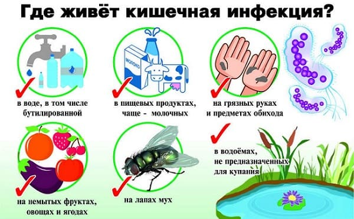
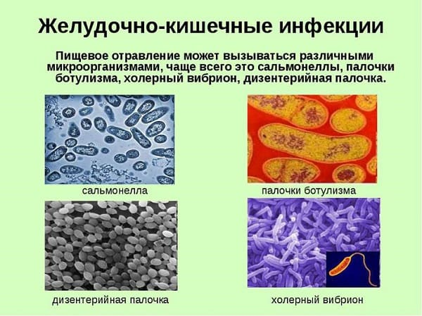
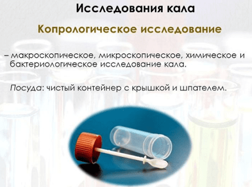
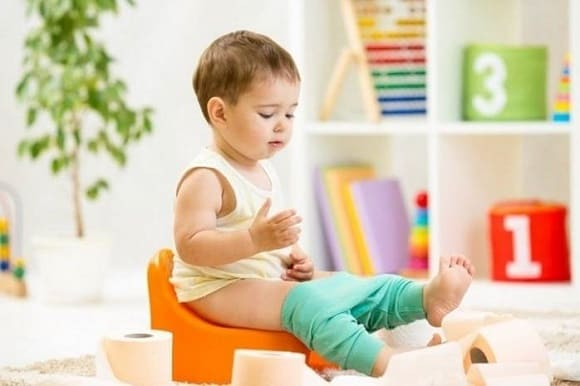
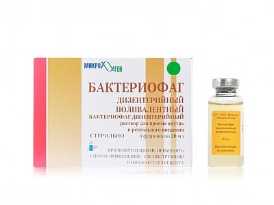

Продукты питания и вода, потребляемые человеком, весьма далеки от стерильности. Миллиарды самых разнообразных бактерий ежедневно и ежечасно попадают к нам в организм, и совершенно ничего страшного от этого не происходит – уж слишком много способов нейтрализации микробов выдумала природа. Обладающая бактерицидными свойствами слюна, ядовитый желудочный сок, множество своих, «хороших» бактерий в кишечнике – все это не дает чужакам возможности прижиться и сделать свое черное дело.
Тем не менее человека, ни разу не болевшего кишечной инфекцией, просто не существует. Не существует хотя бы потому, что имеется множество способов нейтрализации всех многочисленных защитных сил – глотать, не пережевывая, чтобы слюна не успела до микробов добраться, переедать, нейтрализовать щелочными напитками кислый желудочный сок, убивать собственных микробов антибиотиками и т. д.
Но
наиглавнейшей причиной кишечных инфекций было, есть и будет несоблюдение элементарных гигиенических норм —
неправильное хранение пищевых продуктов, немытые руки, снующие между обеденным столом и туалетом мухи. В конце концов, какими бы замечательными защитными силами человеческий организм ни обладал, всегда найдется такое количество микробов, нейтрализовать которое просто невозможно.

Возбудителями кишечных инфекций могут быть бактерии (дизентерийная палочка, сальмонелла, стафилококк, палочка брюшного тифа, вибрион холеры) и некоторые вирусы.
Конкретное имя конкретного возбудителя конкретной кишечной инфекции интересует, прежде всего, медицинских работников. Объем, направленность и интенсивность противоэпидемических мероприятий во многом определяется именно видом возбудителя.
Одни бактерии распространяются через воду, другие – через продукты питания, причем продукты эти не какие угодно, а совершенно определенные. В одном случае – овощи, в другом – яйца, в третьем – молочные продукты и т. д.
Одни бактерии очень(!) заразны (например возбудитель холеры), другие – поменьше.
В одном случае заболевание развивается стремительно и представляет собой реальную угрозу человеческой жизни, в другом – симптомы развиваются медленно, а сама болезнь не особенно опасна.
Микробы, возбудители кишечных инфекций, могут (как правило, так оно и происходит) поражать не весь желудочно-кишечный тракт, а определенные его отделы. Воспалительный процесс в каждом таком отделе имеет свое медицинское название: воспаление желудка – ГАСТРИТ, двенадцатиперстной кишки – ДУОДЕНИТ, тонкого кишечника – ЭНТЕРИТ, толстого кишечника – КОЛИТ.

Помните – мы уже приводили похожие слова, когда писали о поражении органов дыхания: ринит, фарингит, ларингит, трахеит, бронхит… С желудочно-кишечным трактом ситуация аналогичная, а одновременное поражение нескольких его отделов порождает использование сложных и страшных слов: гастродуоденит, гастроэнтерит, энтероколит, гастроэнтероколит. Становится понятным, что медицинский термин «энтероколит» не является именем болезни – он лишь характеризует поражение определенного участка желудочно-кишечного тракта. Этот самый «определенный участок» врачи выявляют довольно легко – по симптомам болезни и по внешнему виду каловых масс. А вот установить точное имя болезни по симптомам довольно сложно. Хотя многие кишечные инфекции имеют весьма характерные симптомы. По крайней мере, дизентерию, брюшной тиф, холеру часто удается диагностировать без дополнительных анализов.
Тем не менее как бы очевидны ни были симптомы, окончательный диагноз ставится только после микробиологического обследования (исследуют кал, рвотные массы, воду, которую собирают после промывания желудка, кровь, «подозрительные» продукты питания и напитки). Обнаружили дизентерийную палочку – значит, точно дизентерия. Обнаружили сальмонеллу – значит, точно сальмонеллез и т. д.

Но все не так однозначно. Для того чтобы поставить диагноз, следует не просто обнаружить микроб. Необходимо, чтобы обнаружение микроба сопровождалось конкретными симптомами кишечной инфекции – рвотой, поносом и т. д. При самых разнообразных профилактических обследованиях (перед тем, например, как ребенок пойдет в детский сад или школу, перед поездкой в санаторий) сплошь и рядом в кале обнаруживают нечто плохое – опасную кишечную палочку, или сальмонеллу, или палочку дизентерии. Если микроб есть, а проявлений кишечной инфекции нет, такая ситуация свидетельствует о том, что данный человек (взрослый или ребенок, не принципиально) – «жертва бактериологического обследования» – является здоровым носителем определенной бактерии. Т. е. этот человек имеет к данному возбудителю иммунитет; иными словами, заболеть он не может, но все же для общества представляет угрозу, поскольку распространяет заразу. И таким человеком медики пренепременно займутся вплотную.
После проникновения в человеческий организм возбудители кишечных инфекций начинают активно размножаться, что приводит, во-первых, к нарушениям процесса пищеварения и, во-вторых, к воспалению клеток слизистой оболочки кишечника. Типичным и наиболее характерным следствием двух указанных процессов является основной симптом любой кишечной инфекции – понос.Другие признаки болезни – тошнота, рвота, боли в животе, повышение температуры тела, отсутствие аппетита, общая слабость – встречаются часто, но обязательными спутниками кишечной инфекции не являются.
Кстати, следует отметить, что на бытовом и на медицинском уровне понятия кишечной инфекции весьма разнятся. Для обычного человека ясно: раз есть понос, значит, и кишечная инфекция есть, а для врача главное не симптомы, а путь заражения. С медицинских позиций, любая болезнь, передающаяся через рот (с пищей, водой, немытыми руками – так называемый фекально-оральный путь инфицирования), является типичной кишечной инфекцией. Наиболее показательный пример – вирусный гепатит А (болезнь Боткина). Заражение вирусом всегда происходит при его попадании в желудочно-кишечный тракт, но поражается печень, а никакого поноса в большинстве случаев нет.
Пути профилактики кишечных инфекций достаточно очевидны и сводятся к соблюдению элементарных гигиенических норм: мытью рук, особенно тщательно после посещения туалета, термической обработке пищи и воды, выполнению правил хранения пищевых продуктов, изоляции больных и, как минимум, обязательному выделению им отдельной посуды.
Всегда следует помнить, что наиболее страшным и опасным последствием любого поноса является потеря организмом жидкости и солей. Без пищи человеческий организм более или менее благополучно может просуществовать пару недель, но без адекватного обеспечения водой и солями калия, натрия, кальция человек жить не может: в этом случае счет идет на часы.
Запасы воды и солей особенно невелики в организме ребенка, и именно для детей кишечные инфекции представляют собой реальную угрозу здоровью и жизни.
Таким образом, истинная тяжесть кишечной инфекции зачастую определяется не частотой стула, не запахом и цветом испражнений, а именно степенью обезвоживания. Определить тяжесть кишечной инфекции может только врач, но вероятность того, что по поводу каждого поноса люди будут обращаться за медицинской помощью, очень невелика. Поэтому подчеркнем, что вне зависимости от того, как называется конкретная кишечная инфекция, существуют совершенно определенные правила поведения больного и его родственников.
1 Всегда следует задуматься над тем, что это вы такое съели или чем накормили ребенка. Полбеды, если это ваш личный кулинарный шедевр, но если это пирожное из близлежащего магазина, то следует проявить сознательность и подумать о тех, кто может пойти по вашим следам. Узнать телефон районной санитарной станции совсем не трудно.
2 Кишечная инфекция у любого члена семьи – сигнал тревоги для всех остальных. Больному – отдельная посуда, всем остальным – организовать идеальную чистоту, тщательно мыть руки, убрать от греха подальше подозрительные продукты, всю посуду перекипятить, не жалеть дезинфицирующих средств.
3 И понос, и рвота являются способами защиты организма. В упрощенном варианте это выглядит так: в желудочно-кишечный тракт попало что-то не то, и организм всеми возможными способами пытается эту гадость удалить. Поэтому в первые часы кишечной инфекции мы вовсе не заинтересованы в том, чтобы понос и рвота прекратились. Наоборот, в обоих направлениях организму следует помогать – пить и рвать (а если не хочется – сознательно вызывать рвоту, промывая тем самым желудок), очистить толстый кишечник с помощью клизмы. Для клизмы используется обычная кипяченая вода, ни в коем случае не теплая (оптимальная температура около 20 °C), обязательно следить за тем, чтобы вышла вся введенная жидкость.
4 Главный принцип помощи – восполнение потерь жидкости и солей. Для этой цели идеально подходят лекарственные средства, имеющиеся в любой аптеке и представляющие собой заранее приготовленную смесь различных солей, которую перед употреблением разводят кипяченой водой. Если же аптека далеко, вполне подойдут минеральные воды, отвары изюма, трав, шиповника, компот из сухофруктов, можно чай, лучше зеленый, чем черный. В конце концов, лучше пить то, что есть под рукой, чем не пить ничего.
5 Температура напитков ориентировочно должна быть равна температуре тела – при этом всасывание жидкости из желудка в кровь будет максимально быстрым.
6 При упорно повторяющейся рвоте помните, что надо пить чаще, но малыми порциями, чтобы не растягивался желудок, а использование любых противорвотных препаратов всегда согласовывать с врачом.
7 По большому счету, существует лишь два абсолютно безопасных способа самостоятельного лечения кишечных инфекций – голод и обильное питье. Любые лекарственные препараты могут привести к самым неожиданным последствиям, ну разве что кишечные сорбенты целесообразны и показаны практически всегда.
8 Интенсивность ваших волнений должна быть теснейшим образом связана с общим состоянием ребенка, а не с тем, сколько раз он запачкал пеленки (попросился на горшок, сбегал в туалет). Следите за цветом мочи: если она светлая – дефицита жидкости нет.
9 Обращение к врачу обязательно при поносе у детей первого года жизни и, вне зависимости от возраста, при отсутствии тенденции к улучшению в течение суток.
10 Немедленно обращайтесь за медицинской помощью, если:
• наиболее волнующим симптомом кишечной инфекции является боль в животе;
• из-за упорной рвоты вы не можете ребенка напоить;
• более 6 часов нет мочи;
• сухой язык, запавшие глаза, кожа приобрела сероватый оттенок;
• в кале имеется примесь крови;
• понос прекратился, но при этом усилилась рвота, и (или) резко поднялась температура тела, и (или) появились боли в животе.
11 При улучшении состояния не торопитесь скармливать детенышу все подряд. Чай с нежирным творожком, рисовая и овсяная кашки – пусть потерпит-поголодает сутки-двое, здоровее будет.

Следует отметить: современная терапия кишечных инфекций вовсе не предусматривает глотание всеми любимых фталазола и левомицетина хотя бы потому, что причиной каждого второго поноса являются вирусы, на которых упомянутые антибактериальные препараты не действуют вообще. Но даже если это бактерия, отношение к использованию антибактериальных препаратов неоднозначно. Так, при дизентерии антибиотики используются практически всегда, а при сальмонеллезе – значительно реже.
Парадоксальность лечения кишечных инфекций состоит прежде всего в том, что строгая диета, восполнение потерь жидкости и солей да плюс время и терпение – это почти всегда достаточные условия для выздоровления (соблюдение при этом правил гигиены подразумевается).
Что же здесь такого парадоксального? – спросите вы. Прежде всего то, что пить и голодать, в представлении наших соотечественников крайне недостаточно для «полноценного» лечения, надобно еще таблеточек, да побольше…
Потребность в вышеупомянутом «полноценном» лечении небезуспешно пытается удовлетворить медицинская наука, которая активно разрабатывает новые методы помощи кишечно пострадавшим.
Так, в качестве альтернативы антибиотикам предлагают использовать так называемые эубиотики – полезные кишечные бактерии, которых следует «запустить» в кишечник, рассчитывая на то, что они сами «выгонят» непрошеного гостя.
Еще один предлагаемый способ лечения кишечных инфекций основан на том, что почти у всех бактерий имеются естественные враги – особые вирусы, которые поражают именно бактерии. Такие вирусы называются бактериофагами, или просто фагами. Уже разработаны, активно выпускаются и используются препараты, содержащие в своем составе определенные фаги: «сальмонеллезный бактериофаг» – для лечения сальмонеллеза, «дизентерийный бактериофаг» для лечения дизентерии и т. д.

Тем не менее с грустью приходится признавать, что, несмотря на теоретическую логичность и привлекательность, практическое применение и эубиотиков, и бактериофагов вовсе не приводит к выздоровлению быстрее, нежели все те же диета да питье.
Неудивительно, что в подавляющем большинстве стран мира эти лекарственные средства не применяются (и не выпускаются, и не регистрируются), поскольку доказать их эффективность медицинская наука пока еще не в состоянии.
В стационаре основным способом оказания неотложной помощи при кишечных инфекциях является инфузионная терапия, т. е. внутривенное введение жидкости и солей для быстрого возмещения потерь.
При самой опасной кишечной инфекции – холере – инфузионная терапия вообще является наиглавнейшей. Возбудитель холеры вырабатывает экзотоксин (он называется холероген), который находится в просвете кишечника, и его в этой связи не удается нейтрализовать сывороткой. Под действием холерогена клетки слизистой оболочки кишечника как бы сморщиваются и теряют жидкость литрами! Вот и приходится в огромных количествах вводить препараты внутривенно и проводить очень активное лечение до тех пор, пока в организме не появятся антитела к токсину.
Е.О.Комаровский. "Здоровье ребенка"